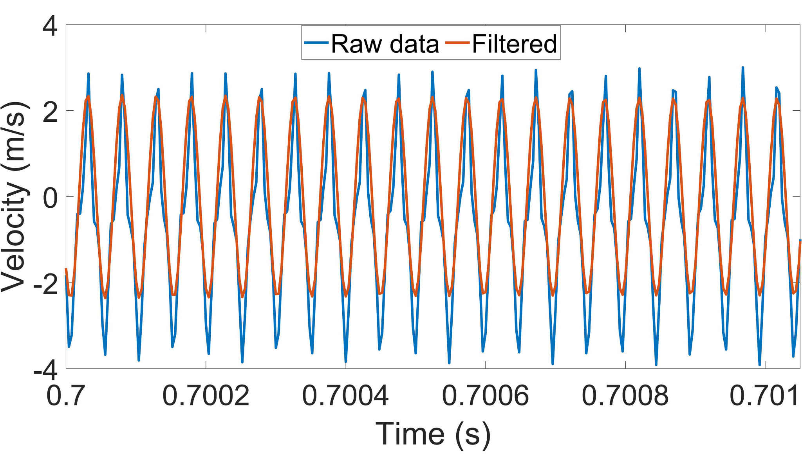
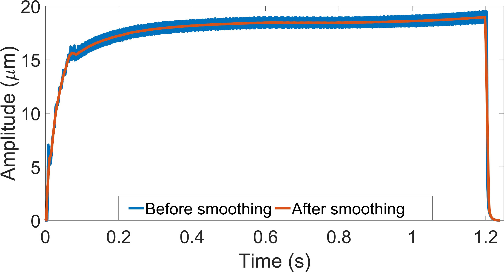
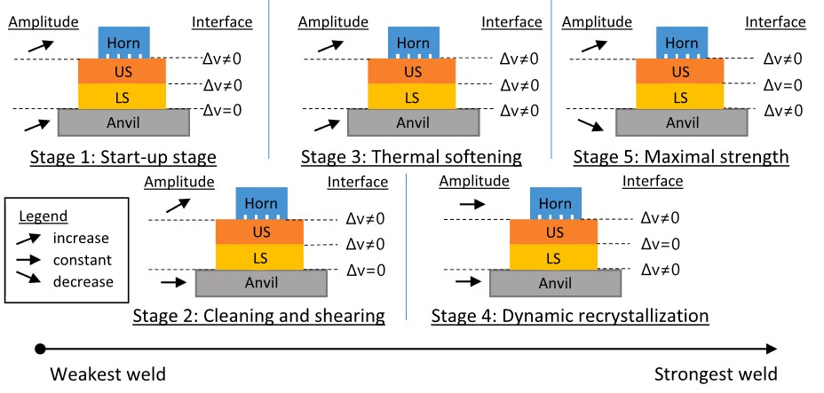
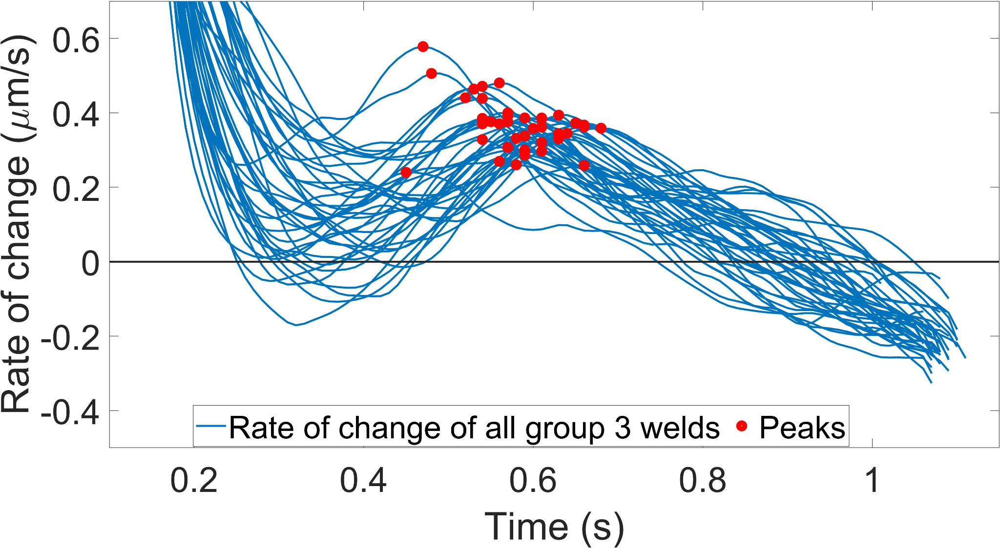
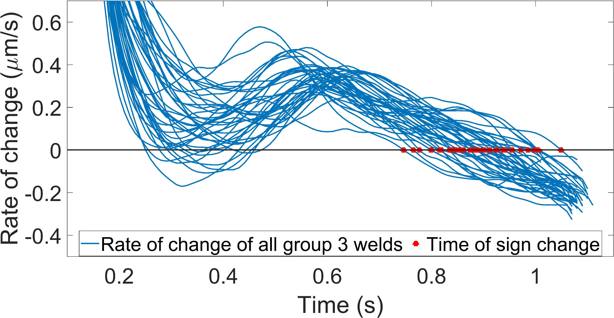
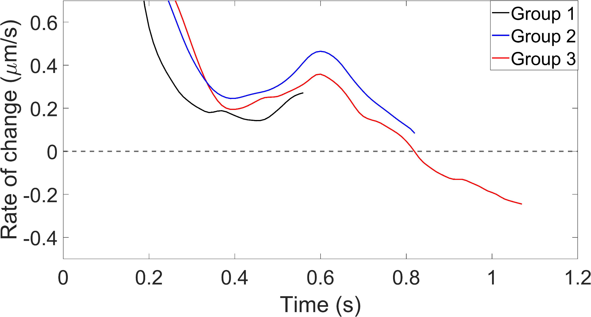
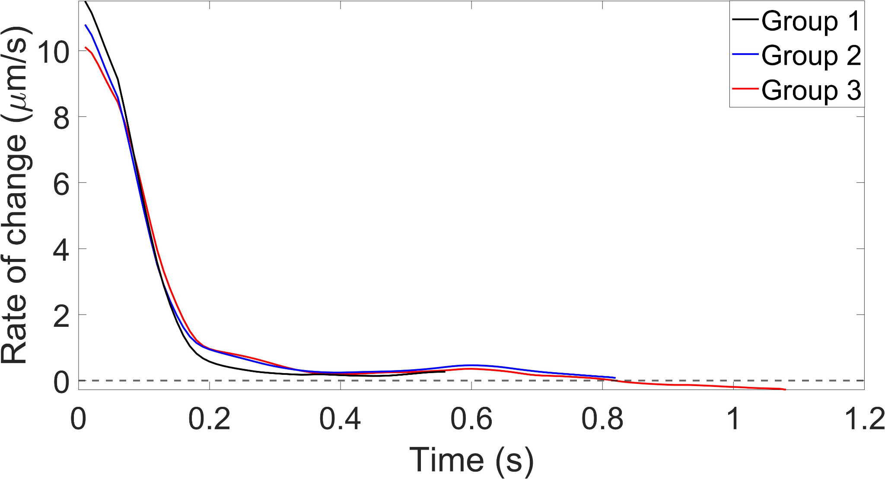
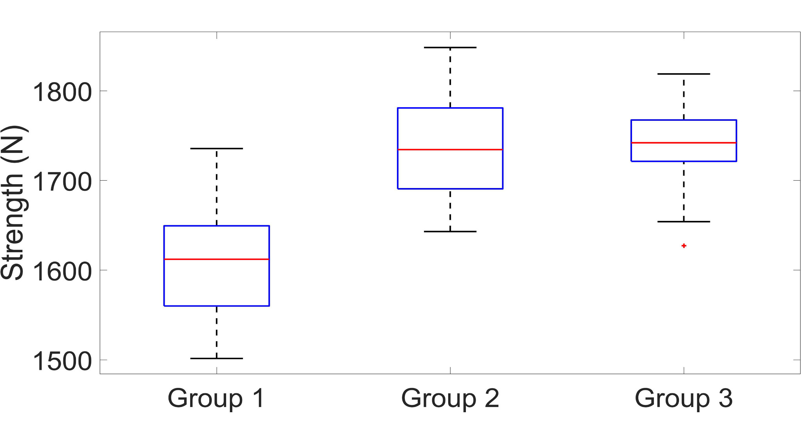

Strength testing destroys the weld. Monitoring should not.
Ultrasonic metal welding joins metal components through pressure and high-frequency mechanical vibration. It is used in industries such as automotive manufacturing, electronics and battery production. But weld strength depends on many interacting factors—from surface conditions to welding parameters and material properties.
One route to quality control is to predict final strength from sensor data. The difficulty is that a statistical relationship developed under one set of conditions may not remain reliable under another. I explored a different question:
Can we recognize the physical state of the welding process itself, and detect when the joint has reached its strongest stage?
The hypothesis was that the horn and anvil vibrations contain signatures of the evolving mechanical contact between the joined sheets. Such signatures could become interpretable monitoring criteria rather than only inputs to a predictive model.
Design an experiment around the reality of the machine.
I investigated 120 copper-sheet welds, divided into three groups of 40 using different welding energies (1,000, 1,400 and 1,800 Ws). Two synchronized laser Doppler vibrometers measured horn and anvil vibrations without touching the process. Every weld was then tested for mechanical strength and failure mode.
There was a practical constraint: flying particles disrupted laser measurements near the welding interface. A custom 3D-printed suction adapter cleared the optical path, enabling measurements close to the horn tip. The anvil measurement was taken at a more accessible point on its side—an important step toward a practical monitoring setup.
Horn and anvil velocity measured during the weld.
Tensile-shear strength and observed fracture behavior.
Translate a 20 kHz waveform into information about the weld.
Raw laser measurements are high-frequency velocity signals, not direct indications of welding quality. I developed the processing workflow in MATLAB to isolate the vibration at the welding frequency, recover displacement amplitude and make small changes over time interpretable.


From the smoothed envelope, I calculated its rate of change. This derivative-like feature made the boundaries between process stages easier to identify than the raw waveform alone.
Don't just classify the signal. Explain what it means.
The joint evolves through identifiable welding stages: initial motion, surface cleaning, thermal softening and weld formation, dynamic recrystallization, and finally a maximum-strength stage. As the interfaces change, the horn and anvil respond differently.

This connection to the physics matters. It turns a pattern in a time series into a monitoring signal with a plausible mechanical explanation and helps guide what should be tested under different welding conditions.
Two identifiable signal events. One useful decision.
The most promising indicator was the rate of change of the anvil's vibration amplitude. Instead of checking whether a signal had crossed zero at any time, the detection logic uses the sequence of physical stages:
- Find the stage-4 peak.A local maximum in the envelope's rate of change marks a transition associated with dynamic recrystallization.
- Watch for the subsequent zero crossing.When the rate of change becomes negative after that peak, the anvil amplitude begins decreasing.
- Identify entry into stage 5.The decrease indicates the maximum-strength stage, providing a candidate condition for stopping the process.


Some signals crossed zero earlier in the process. Requiring the characteristic stage-4 peak before the later sign change makes the criterion process-aware rather than an arbitrary threshold.

View the same signal over its full amplitude range

Compare the monitoring signal with measured weld strength.
Signal patterns alone would not establish whether the identified stage mattered. I compared them with destructive mechanical tests and fracture modes from all three groups.

The strength difference between groups 2 and 3 was not statistically significant in this study, consistent with a strength plateau under the tested conditions. Three group-2 welds also exhibited the later sign change, consistent with their proximity to the maximum-strength stage.
The alternative horn-based criterion also showed potential but required selecting an amplitude threshold; it was less reliable than the anvil criterion. This reinforced the case for using the anvil as the primary sensor location.
My contribution, from experiment to publication.
As first author and researcher, I worked across the measurement, analytical and interpretive sides of the investigation. My formal credited contributions included conceptualization, methodology, investigation, software, formal analysis and drafting and revising the publication.
Plan the measurement configuration, synchronize non-contact sensing and address optical interference.
Build a MATLAB processing chain for filtering, envelope analysis, rate-of-change detection and comparisons.
Relate time-series behavior to distributions of measured strength and fracture modes.
Connect welding-stage physics to an interpretable criterion for recognizing maximum weld strength.
A foundation for smarter process control—not a deployed controller.
The results demonstrate that accessible vibration measurements can provide meaningful, physically interpretable information about ultrasonic welding progress. The anvil-based criterion is especially promising for future real-time, non-destructive monitoring because it does not depend on measuring directly at the weld interface.
This was an experimental investigation on copper sheets under selected welding conditions. It did not establish a production-ready closed-loop system, and transferability to other materials, machines and welding conditions remains to be tested. An important next step is evaluating this approach alongside data-driven monitoring techniques.
Published in the Journal of Manufacturing Processes.
Acoustic monitoring of weld strength in ultrasonic metal welding by tracking welding stages
Elie Abi Raad and Michael Vorländer · Journal of Manufacturing Processes, 101 (2023), 1055–1064.
Figures reproduced from the authors’ original research materials. Journal: Journal of Manufacturing Processes (2023).